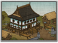

Enables
- Buildings: 
Basic Building Statistics (can be modified by difficulty level, arts, skills, traits and retainers)
- Cost: 900
Clan Effects
- Improves the rate at which all arts are mastered: +3%
Description
The dull mind must be sharpened.
A school gives a basic education to those who can learn and have enquiring minds. This helps with research into the arts, as students experiment with their new-found wisdom. An educated class is also the sign of wealth and spare productive capacity in a province. It is only when there is spare time to look up from the daily grind of trying to feed yourself and your family that any kind of organised, formal education becomes possible. And when that tipping point is reached, the world opens up. With education a man is no longer limited only to learning from his experiences, and he can move beyond the accumulated folk wisdom of his fellows. Existing knowledge can be studied, commented upon, and used as a basis for further thought.